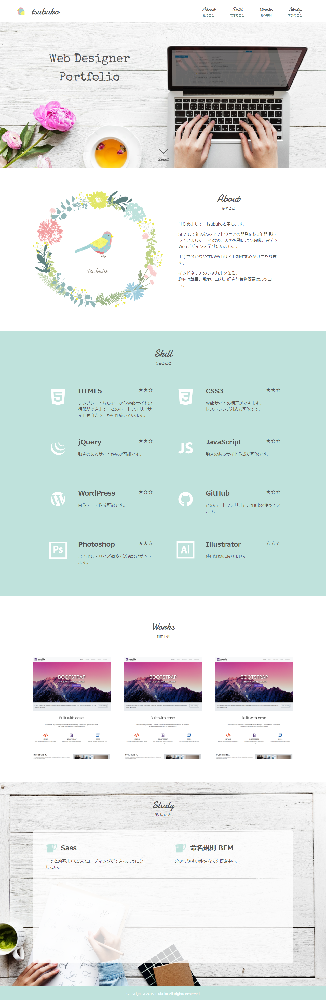

Works制作事例
- 


はじめまして。tsubukoと申します。
SEとして組み込みソフトウェアの開発に約8年間携わっていました。 その後、夫の転勤により退職。独学でWebデザインを学び始めました。
丁寧で分かりやすいWebサイト制作を心がけております。
インドネシアのジャカルタ在住。
趣味は読書、散歩、ヨガ。好きな葉物野菜はルッコラ。
★★☆
テンプレートなしで一からWebサイトの構築ができます。このポートフォリオサイトも自力で一から作成しています。
★★☆
Webサイトの構築ができます。
レスポンシブ対応も可能です。
★★☆
動きのあるサイト作成が可能です。
★☆☆
動きのあるサイト作成が可能です。
★☆☆
自作テーマ作成可能です。
★☆☆
このポートフォリオもGitHubを使っています。
★★☆
書き出し・サイズ調整・透過などができます。
★★☆
効率よくスピーディーにコーディングすることを目指しています。
Webページを作成して商品を宣伝したい、新しいサービスを詳しく紹介したい、といったご要望にお応えします。
価格：10,000円〜
納期目安：3～4週間前後
デザイン / コーディング込み
自社ホームページが欲しいと考えている方はこちら！おしゃれで見やすいホームページを細部まで丁寧にお作りします。
価格：30,000円〜
納期目安：3～4週間前後
デザイン / コーディング込み
※レスポンシブ(スマホ)対応のみ、コーディングのみの対応も可能です。
※詳しい費用はお問い合わせ時にご確認ください。